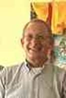

KFE Administrators (Board of Trustees)
Ringu TULKU Rinpoche (President)
Ringu Tulku Rinpoche is a Tibetan Buddhist Master of the Kagyu Order. He was trained in all schools of Tibetan Buddhism under many great masters including His Holiness the 16th Gyalwang Karmapa and HH Dilgo Khentse Rinpoche. He took his formal education at Namgyal Institute of Tibetology, Sikkim and Sampurnananda Sanskrit University, Varanasi, India and has served as Tibetan Textbook Writer and Professor of Tibetan Studies in Sikkim for 25 years. Since 1990 he has been travelling and teaching intensively Buddhism and Meditation, worldwide: at Universities, Institutes and Buddhist Centres. He has also participated in various interfaith and Science and Buddhist dialogues. He authored several books on Buddhism as well as some children’s books both in Tibetan and European languages. Ringu Tulku Rinpoche is the Official Representative of His Holiness the 17th Gyalwang Karmapa for Europe and the Founder of KFE.
Horst-Günter RAUPRICH (Vice President)
Horst-Günter RAUPRICH started practicing Buddhism in the eighties resulting in a new quality in his live. After his retirement in 1989, he became member of the board of directors of the Karma Kagyu Trust Germany. Since that time he is working for the Karma Kagyu Lineage and His Holiness the 17th Gyalwang Karmapa. He met His Holiness in 1992, two weeks after His Enthronement in Tsurphu/Tibet. This first encounter was followed by biennial visits combined with pilgrimages in Central and West Tibet. On request of the abbot of Tsurphu, he organised world-wide fundraising for the reconstruction of the Tsurphu Shedra in close cooperation with the Tibet Development Fund and all responsible offices and agencies in Central Tibet. His greatest wish is to welcome His Holiness Karmapa in Germany at the Kamalashila Institute®. He is an experienced general manager with long experience as a Banker and officer in the German Mountain Division, followed by a carrier as General Staff Officer in national and international headquarters. He is married and has three children and four grandchildren.
Tomasz - SZCZYGIELSKI (Vice President)
Thomas SZCZYGIELSKI is the coordinator of the Marpa Institute, a nonprofit organization established in 1994 under the spiritual direction of Khenpo Tsültrim Gyamtso Rinpoche, one of the foremost living teachers of the Kagyu tradition of Tibetan Buddhism. The Marpa Institute’s purpose is to support the study, practice, and transmission of Buddhism in both the East and the West. He has contributed financially to numerous Buddhist projects including the Buddhist Book Project for Poland. Thomas SZCZYGIELSKI has long professional experience in the protection of the environment and economy with focus on Coal Combustion Products (CCP) being chairman of the Polish CCP Union. He is involved in more than 200 conferences within the context of his expertise.
Pierfranco ALLOA (General Secretary)
Buddhism has been ever since 1977 at the core of the life of Pierfranco Alloa. Having had the great fortune to benefit from teachings and guidance from extraordinary masters, he has been exposed to the doctrines of various -principally Kagyu- Tibetan Schools, but also Theravada and other Buddhist traditions. He has had the privilege in taking part at the ceremonies of HH the 17th Karmapa's Enthronement in Tsurphu in September 1992, hearing his first public talk in English in the year 2000 in India and be in New York in 2008 at the time of his first visit to the West. On behalf and at the request of Tarab Tulku Rinpoche in Denmark, he had also conducted a mission with about 15 people to Kongpo in Tibet in 1995, in order to secure a contact with his former monastery and the region from which he had to flee and see what support could be provided. In the past he taught for a prolonged period Vipassana meditation and currently animates in Brussels a multiannual "Study Group on Dharma". As official of the European Commission (EC) for 37 years he spent many years on North/South cultural co-operation and on intercultural dialogue and the last five years on the relations of the EC with Civil Society (strategic coordination and training). He is married and has two children.
Rüdiger FINDEISEN (Treasurer)
 Rüdiger FINDEISEN is Managing partner of the Kagyu Media Event (KME) in Hamburg and has significant artistic contribution concerning the work of His Holiness the 17th Karmapa. Among others, he has also created the cover for the CD “Sacred Buddha - H.H. The 17th Gyalwa Karmapa”. From the professional point of view, he is an Architect with an established office in Germany.
Rager OSSEL (Treasurer)
Ragel Ossel had the unique opportunity to encounter Buddhism very early, at the age of 20, and to meet with the Karmapa the 16th since the early seventies living together unique and memorable experiences. He has implemented multimedia projects including the “Living the Dharma, 17th Karmapa” (collection of movies based on the original teachings of HH the 17th Karmapa) under the mindful guidance of Ringu Tulku Rinpoche. Rager Ossel is cofounder and CEO of a provider of advanced ICT utility computing solutions to businesses throughout Europe.
Francois JACQUEMART
Lama Cheuky Sèngué (François Jacquemart) was born in 1949 and had his first encounter with Tibetan Buddhism in 1976. He accomplished a 3-year Buddhist retreat in France in the beginning of the eighties. He became a close student of the late Bokar Rinpoche and served him as an interpreter for a long period. In 1985, he founded (and still directs) Claire Lumière publications dedicated to Tibetan Buddhism, translating, editing, and publishing a considerable number of books in French, mainly for the Kagyu Lineage. He is also in charge of a few small Dharma centres (Aix-en-Provence, Avignon, and Grenoble) and teaches in France and Spain. His Holiness the Karmapa has requested him to translate in French the Kagyu Monlam Books, a task which was completed under His direction at the Gyutö Monastery.
Inès WOUTERS
Inès WOUTERS is responsible of the activities of the Bodicharya office in Brussels including the visits of Ringu Tulku Rinpoche. She has contributed to the translations of many Buddhist texts to French including the book of Ringu Tulku Rinpoche “Et si vous m'expliquiez le bouddhisme ? : Les principes fondamentaux du bouddhisme tibétain” Inès WOUTERS is a Barrister in Brussels, specializing in religious liberty, philosophical and economic law. She is also specialising in tax law, particularly international tax law, the taxation of small and medium-sized enterprises, donations and inheritance, and international commercial contracts and human rights. She is also an administrator in Trans European Law Firms Alliance (TEFLA).